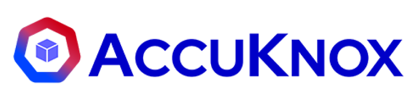

Skills
Reusable, versioned building blocks.

Zero Trust Agentic AI
Security Platform
Build, run and govern real agents. Secure by default, so the power of agentic AI never costs you control.
The platform
One control plane for every agent, model and team.
Reusable, versioned building blocks.
Chain steps, schedule, hand off work.
Shared memory, files, and knowledge.
Roles, ownership, shared scope.
Secure by default. No standing access.
Every step recorded and replayable.
Compose skills, wire them into workflows, and roll them out across your organization. Bring any model or framework. Security stays underneath, so you focus on what the agents actually do.
Package capabilities as reusable skills. Versioned, testable, and shared across every agent your team runs.
Roles, teams, and shared context so every function can put agents to work, not just the platform team.
Chain skills into workflows. Trigger on a schedule, an event, or a request. Hand off cleanly between agents.
Describe the job in a sentence. AgentZ writes the skill and wires every step.
Chat, API, CLI, or a schedule. Any framework, any model, no redeploy.
Resolved at the edge, checked at the kernel, stamped to a signed trace.
You focus on skills and workflows. AgentZ quietly handles the four things that usually turn an agent demo into a production incident.
Secrets stay in the vault. Agents get scoped access at the moment they need it, and never see the key.
Every skill runs with the narrowest permissions that get the job done. No standing cloud roles.
Every action, tool call, and decision is visible in one place, in real time.
A signed trace for every run. SOC and compliance reviews stop being a project.
The first agents in production are not doing science fiction. They are doing the spreadsheet, the ticket, the on-call page, the quarterly report. Boring, valuable, repeatable.
Triage alerts, run remediations, and automate routine ops on a schedule.
Enrich incidents and run guarded response workflows over real tools.
Pull, summarize, and distribute recurring reports across systems.
Resolve tickets and update records with auditable, scoped access.
Automate finance, HR, and procurement tasks under tight controls.
Compose your own agents from marketplace building blocks.
AgentZ asks before anything it cannot undo, and it pushes back when you are about to make a mistake. It proposes, you decide. Every sensitive action waits on your approval.
@AgentZ delete the staging env and the old repo to cut cost.
Killing staging now. The repo has 3 open PRs and a commit from today, so I would hold. Archive it instead?
good catch. archive it.
Powered by Agentic AI. Protected by Zero Trust.
One tool for your organizational AI needs.
From one sentence to a wired, testable skill.
Set a cron, edit from chat, no redeploy.
Inspect every span, down to the token.
Run over real tools with policy at the edge.
Runtime intelligence
Runtime telemetry logs every egress by domain, port and protocol. Each connection is allowed or blocked at the kernel and recorded, so nothing leaves without a record.
See the platformIntegrations
Connect tools, data and models. Bring your own agent framework. AgentZ governs them all through one policy edge.
FAQ
How AgentZ drops into the way your team already ships agents. Here are the answers.
We're happy to walk your team through it and look at your stack.
AgentZ is in preview. Tell us about your team and we'll get you in as we open access, build, run and govern, end to end.